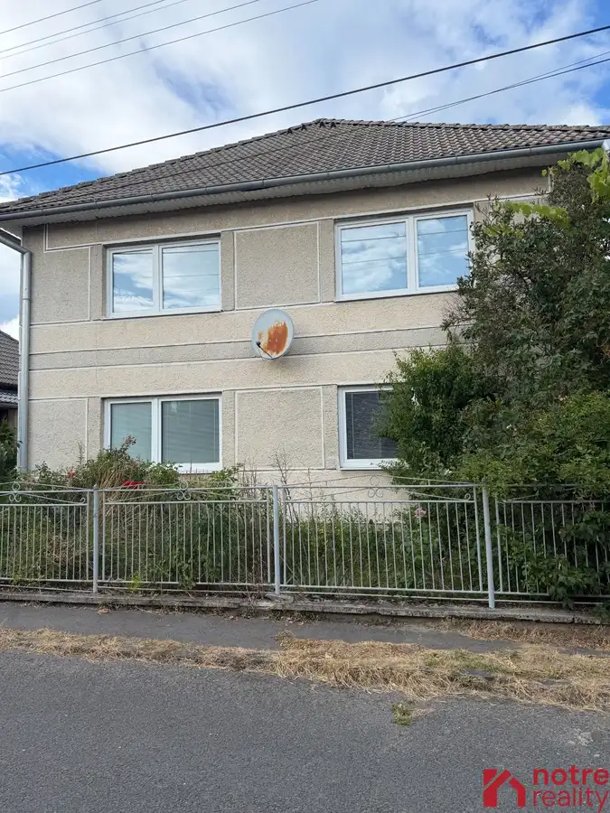
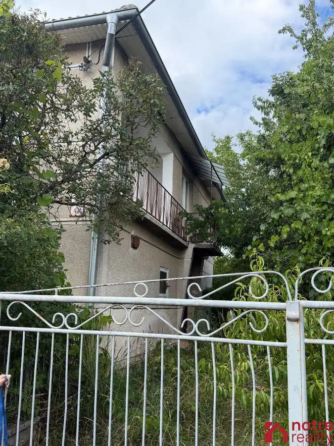
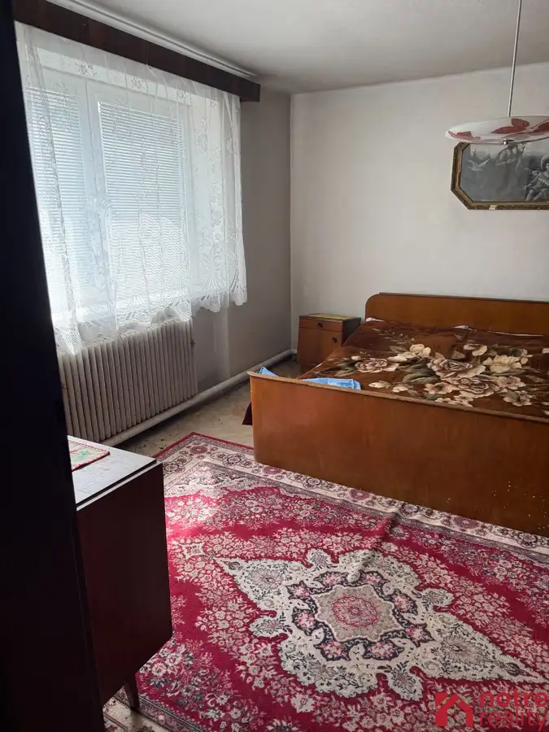
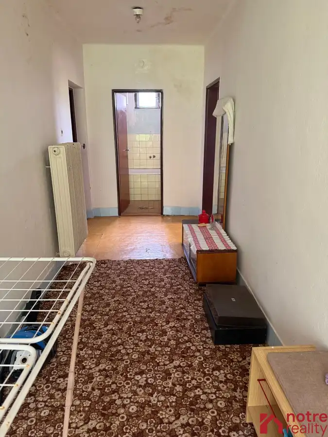
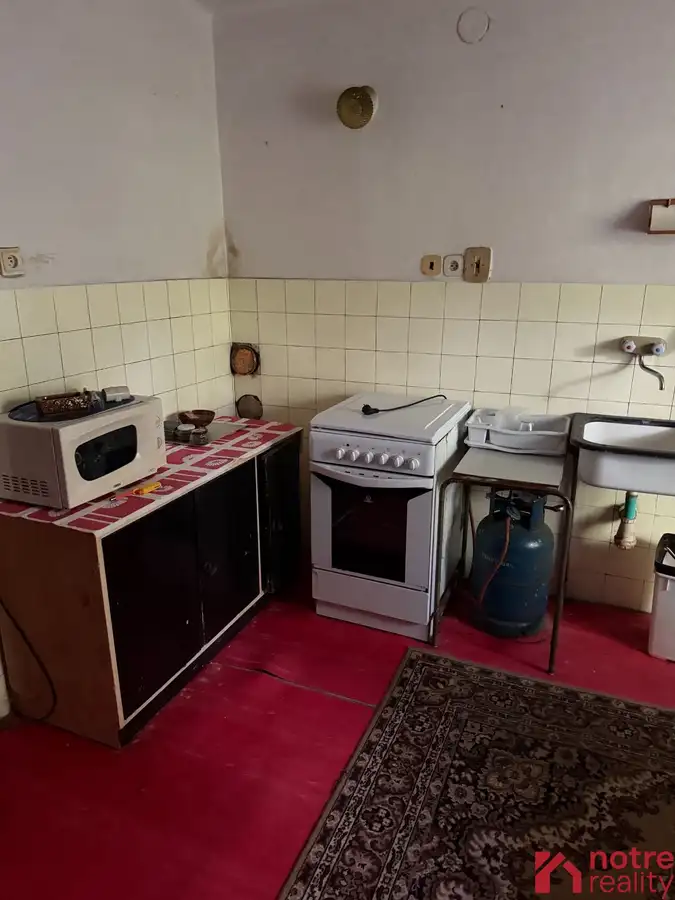
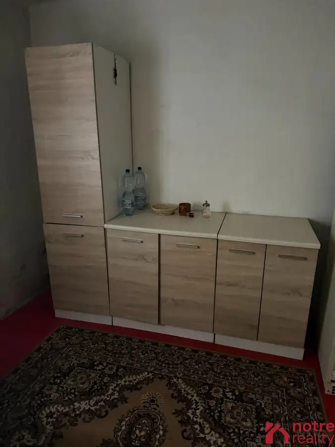
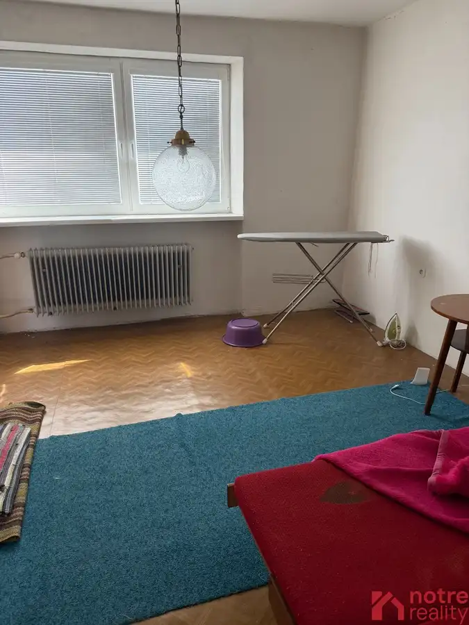
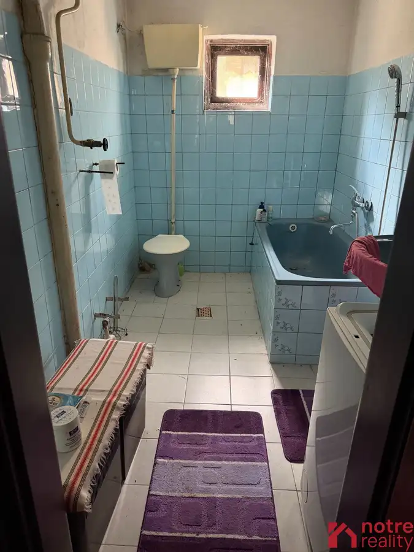

Poschodový rodinný dom v Divíne
Divín








- Dispozícia4-izbový
- Plocha869 m²
- Poschodie0.
- Stavčiastočne prerobený
- Vlastníctvoosobné
O nehnuteľnosti
Na predaj rodinný dom vo výbornej lokalite obce Divín. Nachádza sa v tichej ulici so samostatne stojacimi rodinnými domami. Stojí na veľkom pozemku o výmere 869 m2. Je dvojpodlažný bez podpivničenia. Na prízemí je chodba z ktorej sa vstupuje do dvoch nepriechodných izieb, kuchyne, kotolne, kúpeľne s WC, podschodiskového priestoru a schodiska vedúceho na poschodie. Z chodby na poschodí sa vchádza do dvoch izieb, ďalšej izby ktorá može slúžiť ako kuchyňa, šatníka, kúpeľne s WC a priestrannej loggie. Dom bol postavený okolo roku 1970. V toku 2001 bola urobená nová strecha a v rámci rekonštrukcie boli vymenené okná z uličnej strany domu. Inak je dom v pôvodnom zachovalom stave. Pred domom je predzáhradka a v dvornej časti je postavená prístavba pozostávajúca z dvoch miestností a hospodárskej časti. v záhrade sa nachádzajú ovocné stromy. Bližšie info obdržíte na uvedenom telefónnom čísle alebo pri obhliadke nehnuteľnosti. Dom je bez tiarch, možnosť hypotekárneho úveru.
Parametre
- Rozloha pozemku
- 450 m²
- Zastavaná plocha
- 419 m²
- Celková rozloha
- 869 m²
- Poschodie
- prízemie
- Počet izieb
- 4
- Vlastníctvo
- osobné
- Stav
- čiastočne prerobený
- Status
- aktívne
- Kúpeľňa
- áno
- Lódžia
- áno - 1
- Pivnica
- nie
- Inžinierske siete
- áno
- Postavené z
- tehla
- Zariadenie
- nezariadený
- Zateplený objekt
- nie
- Strecha
- po rekonštrukcii
- Predzáhradka
- áno - 1
- Terén
- rovina
- Prístupová cesta
- asfaltová cesta
- Dátum zverejnenia
- 2026-09-10